MobiLink.
모빌리티와 주거 공간 사이를 자유롭게 오가는 이동형 모바일 콘솔입니다. 모빌리티 안에서는 주행 경험을, 집에서는 스마트 홈 제어를 돕습니다.
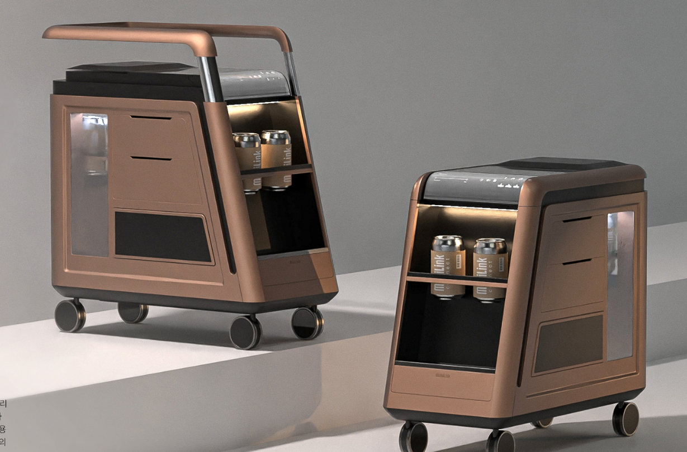
-
 2024.04
IDEA
International Design Excellence Awards · Finalist
2024.04
IDEA
International Design Excellence Awards · Finalist
-
 2023.12
Spark Design Awards
Finalist
2023.12
Spark Design Awards
Finalist
모빌리티와 집을 잇는 모바일 리빙 스페이스
A mobile console that links the vehicle and the home
모빌리티가 주거 공간과 연결되는 ‘모바일 리빙 스페이스’ 개념에 따라, 미래 모빌리티 환경에서 새로운 경험을 제공하는 모바일 콘솔입니다. MobiLink는 모빌리티와 연결된 주거 환경 사이에서 자유롭게 이동할 수 있습니다. 모빌리티 내부에서는 사용자의 주행 경험 맞춤화 서비스를 제공하고, 스마트 홈과 연결되었을 때는 집안의 환경을 관리하고 제어합니다.
Following the idea of a ‘mobile living space’ where the vehicle connects to the home, MobiLink is a mobile console for future mobility. It moves freely between the vehicle and the connected home: inside the vehicle it tailors the ride to the user, and when docked to a smart home it manages and controls the home environment.
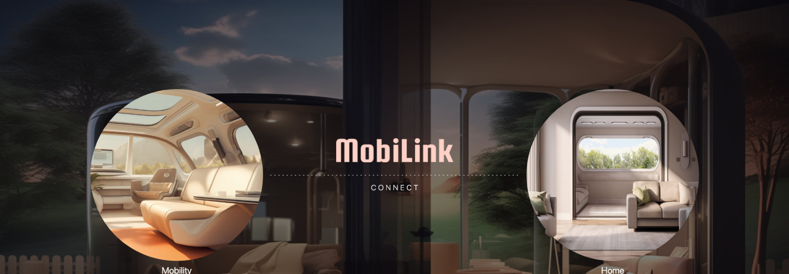
미래 모빌리티는 이동수단과 생활 공간의 역할을 동시에 수행하므로, 이러한 라이프 스타일에 맞춘 다용도 기능이 필요합니다. MobiLink는 모빌리티 내부에서 온도·조명·음향 같은 환경을 손쉽게 조작하게 하고, 모빌리티를 벗어나 주거 환경으로 이동해서도 역할을 이어 갑니다. 모빌리티와 주거 환경 사이의 경계를 희미하게 하며 통합된 라이프스타일을 지향합니다.
Future vehicles act as both transport and living space, calling for multi-purpose functions. MobiLink makes temperature, lighting and sound in the vehicle easy to control, then keeps working after it moves into the home, blurring the line between vehicle and home.
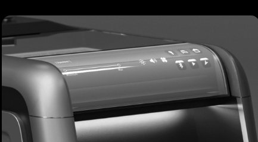
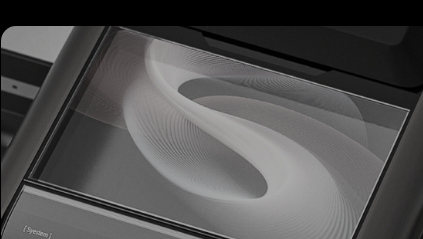
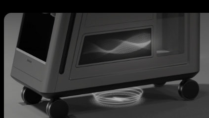
(주)서연이화의 보유 기술력을 반영해 기획한 모바일 콘솔입니다. PC Glazing Tech, Smart Surfaces, Transparent Garnish를 활용해 복곡면 투명 소재에 Shy Tech를 적용했고, Transparent Display로 터치 조작과 내부 공간이 보이는 수납·냉장 기능을 담았습니다. PBV Docking Step을 더해 주행 중인 모빌리티 안에서도 콘솔이 바닥에 도킹되도록 디자인했습니다.
Planned around Seoyon E-Hwa's in-house technologies: PC glazing, smart surfaces and a transparent garnish bring shy tech to a doubly curved transparent surface, a transparent display adds touch control and a see-through storage and fridge compartment, and a PBV docking step lets the console dock to the floor inside a moving vehicle.
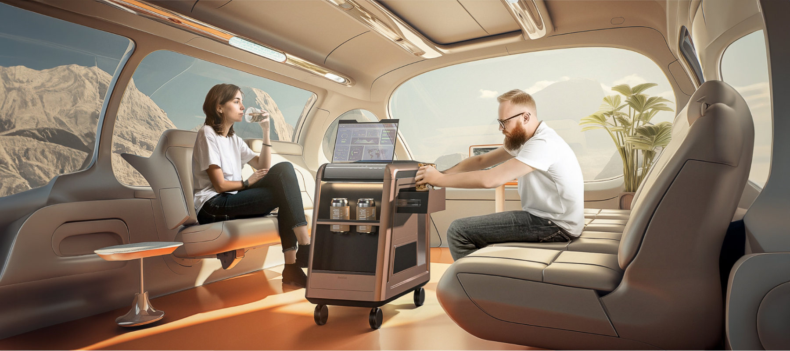
주행 중인 모빌리티 안에서는 도킹된 상태로 사용합니다. 완만한 곡선의 전동식 핸들은 팔을 걸쳐 암레스트로 쓰고, 모빌리티 내부 환경을 제어해 편리한 주행 경험을 제공합니다. 모빌리티가 스마트 홈에 도킹되면 핸들을 밀어 콘솔을 옮기고, IoT로 연결된 주거 환경을 쉽게 제어합니다.
Inside a moving vehicle the console stays docked; its gently curved powered handle doubles as an armrest while the console controls the cabin. When the vehicle docks to a smart home, the handle is used to push the console inside, where it controls the IoT-connected home.
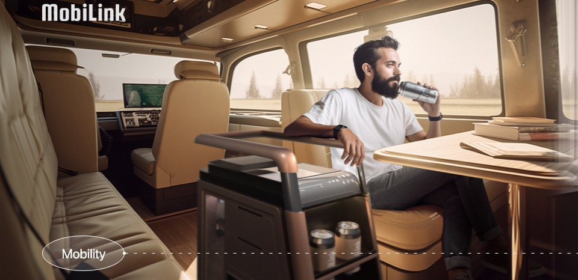
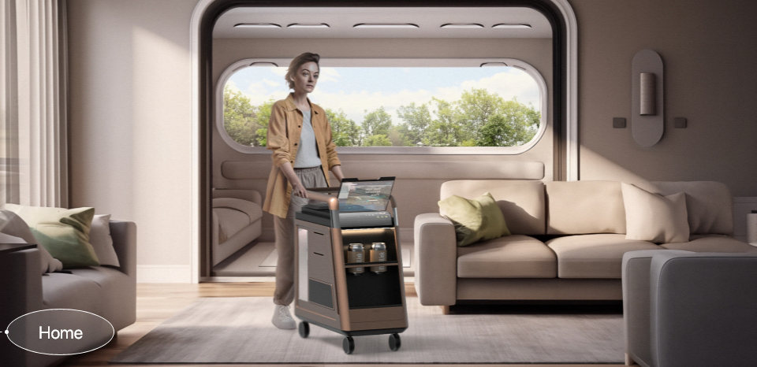
버튼을 눌러 전동 핸들을 상하로 조정합니다. 핸들이 올라가 있을 때는 이동 가능한 상태가 되고, 내려가 있을 때는 콘솔이 움직이지 않도록 바퀴가 고정됩니다.
A button raises or lowers the powered handle. With the handle up the console can be moved; with it down the wheels lock so the console stays put.
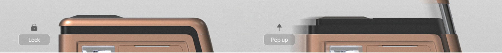
모빌리티와 스마트 홈의 실내 환경을 제어하는 컨트롤러와 수납함을 탑재했습니다. 핸드폰을 올려 두면 충전되는 무선 충전, 음료와 간단한 식품을 보관하는 펠티어 냉장고를 갖췄고, 복곡면 투명 가니시에 Shy Tech로 기능 제어 아이콘을 넣었습니다.
A controller for the vehicle and smart-home environment and storage are built in, with wireless charging for a phone, a Peltier fridge for drinks and snacks, and shy-tech control icons in the doubly curved transparent garnish.
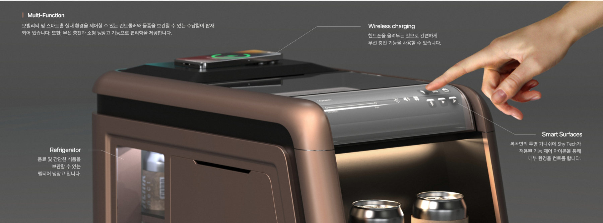
상단 스토리지의 커버는 투명 디스플레이로 만들어, 커버를 열어 L자형으로 고정하면 OTT·동영상을 보기 편한 각도가 됩니다. 좌우 스토리지와 후면 소형 냉장고의 커버는 손잡이 없이 손으로 살짝 누르면 부드럽게 열리는 심리스 커버입니다.
The top storage cover is a transparent display; opened and fixed in an L shape it sits at a comfortable angle for OTT and video. The side storage and rear mini-fridge use handle-free seamless covers that slide open with a light press.
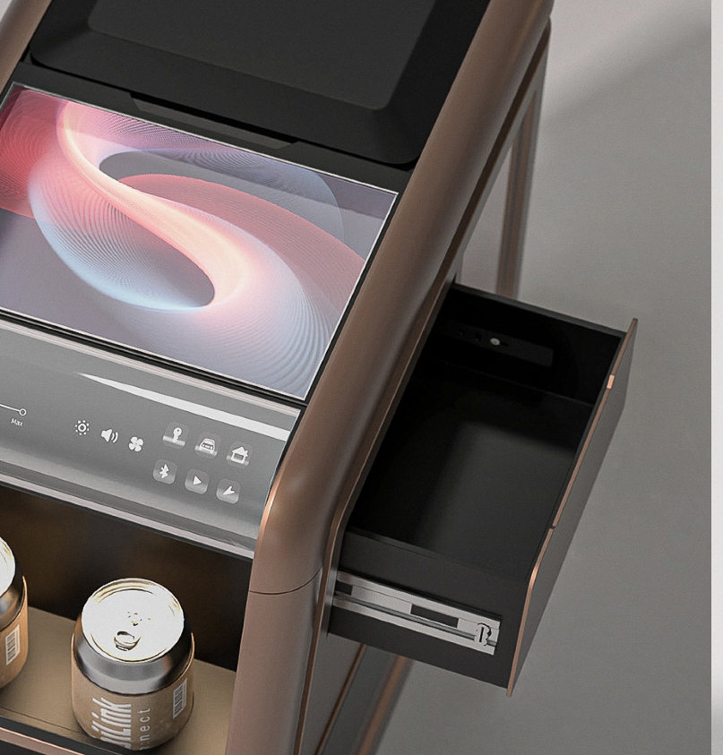
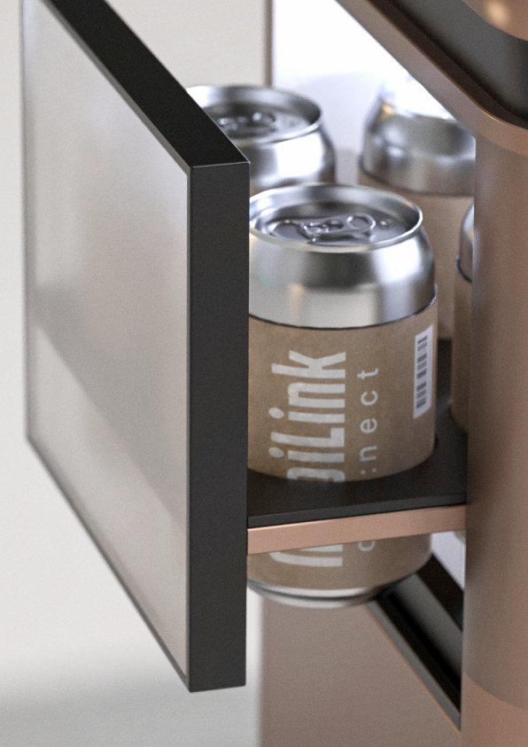
Smart Surfaces Speaker
사용자가 손으로 표면을 쓸면 터치 센서가 압력을 감지하고, 빛이 스마트 표면에서 나옵니다. 빛이 방출되는 패턴은 맞춤형으로 만들 수 있습니다.
Sweeping a hand across the surface triggers the touch sensor and light emerges through the smart surface, in a pattern the user can customise.
PBV Docking Step
모빌리티 내부 충전 구역의 도킹 스텝이 콘솔 바퀴를 바닥에 고정해 주행 중에도 흔들리지 않게 합니다. 도킹을 해제하면 스텝 내부 스프링이 복구되며 평평한 면이 되어 틈새에 먼지가 쌓이지 않습니다.
A docking step in the vehicle's charging zone locks the console's wheels so it stays steady while driving. Undocked, springs return the step to a flat floor so no dust collects in the gaps.
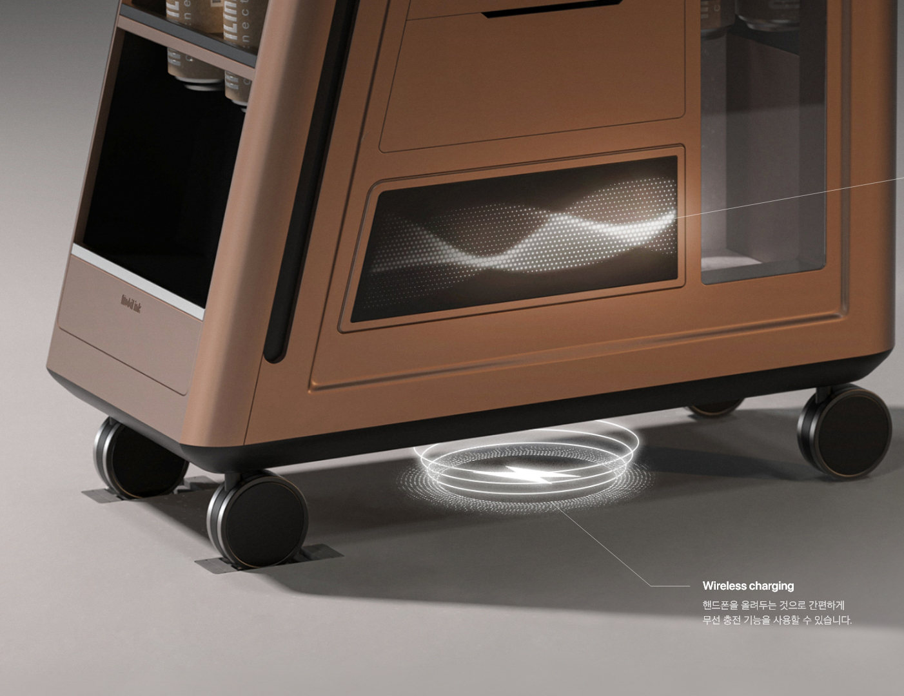
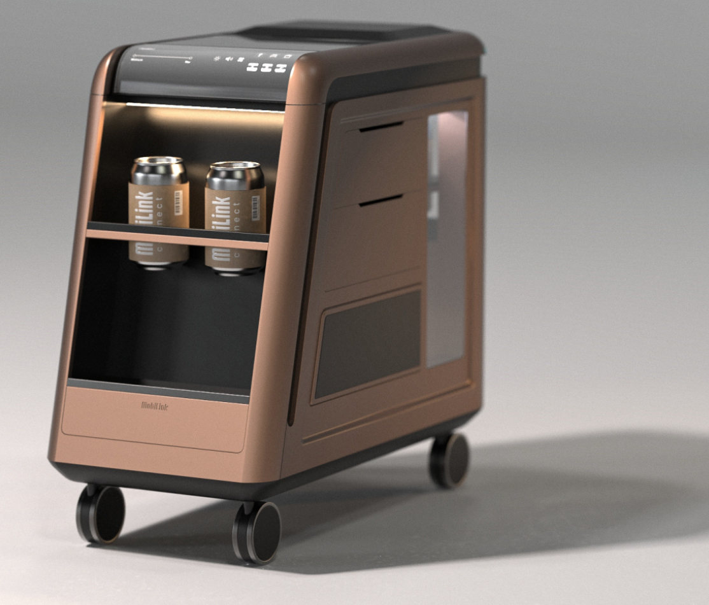
(주)서연이화 주관 정부과제 ‘심리스 환경 제공을 위한 자동차 내장재 보유기술 기반 미래 모빌리티 내장디자인 연구’에서 진행한 내용을 토대로 미래형 콘솔을 디자인해 공모전에 출품했습니다. 컨셉 기획·유저 시나리오 → Midjourney로 컨셉 이미지 대량 생성·셀렉 → Vizcom 퀵 렌더링 → 디자인 스케치 · Low-fidelity 프로토타이핑 · 3D 모델링·렌더링 순으로, 생성형 AI를 활용한 디자인 프로세스를 적용했습니다.
Building on the government project led by Seoyon E-Hwa on future mobility interiors, the console was designed and entered into competition through a generative-AI process: concept planning and user scenarios, mass concept images in Midjourney, quick renders in Vizcom, then sketching, low-fidelity prototyping and 3D modelling and rendering.
공모전 출품 후 Spark Design Awards Finalist(2023.12), IDEA International Design Excellence Awards Finalist(2024.04)에 선정됐습니다.
The project was selected as a Spark Design Awards finalist (Dec 2023) and an IDEA International Design Excellence Awards finalist (Apr 2024).